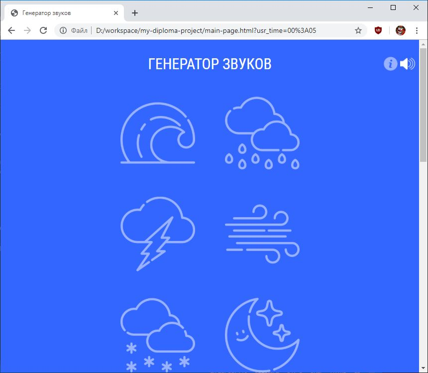
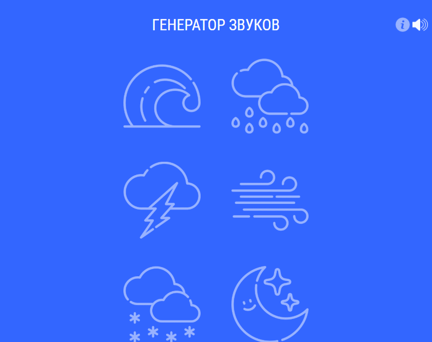
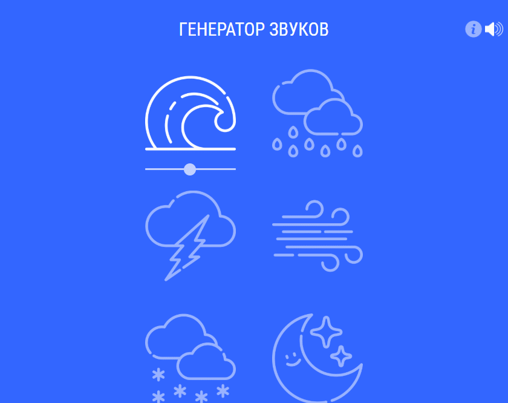
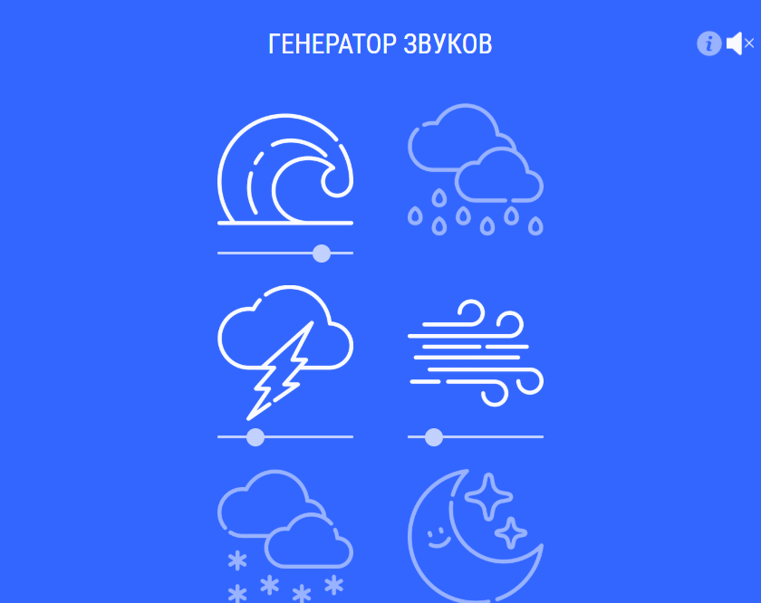
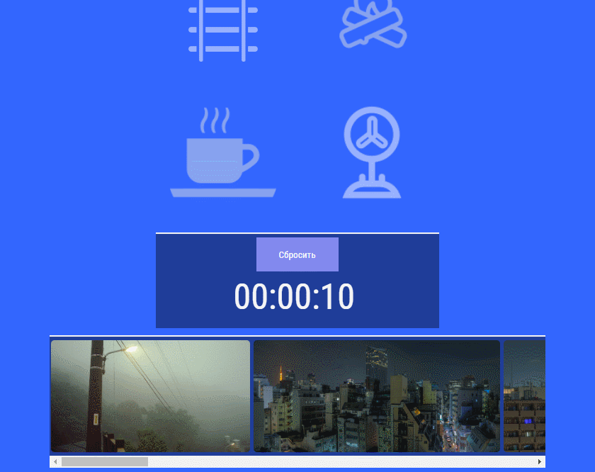

После запуска приложения открывается главное и единственное окно, на котором осуществляется работа с приложением:
Для того, чтобы узнать название звука наведите на него курсор и немного подождите. Для того, чтобы активировать звук кликните по нему 2 раза (при первом использовании приложения, нужно кликать 2 раза на каждый элемент, во избежании случайного нажатия, для последующей работы с элементами графического интерфейса достаточно одного нажатия).
Для того, чтобы деактивировать звук, кликните по иконке соответствующего звука.
Так же, вы можете активировать несколько звуков сразу и регулировать их громкость по-отдельности, либо полностью отключить звук на вкладке с приложением.
Пролистав вниз приложения, вы увидите таймер. После истечения времени на странице отключиться звук.
 В самом низу интерфейса приложения располагается галерея изображений.